프로젝트 설명
개인 프로젝트 matzip map은 음식점 검색 웹 사이트입니다.
접속자의 위치를 인식하여 현재 위치 근처의 음식점이 표시됩니다.
해당 음식점의 영업시간과 마감시간, 영업 중 또는 영업 종료를 메인 페이지에서 확인이 가능하도록 하였습니다.
소셜 로그인이 가능하며, 로그인 후 리뷰 작성이 가능합니다.
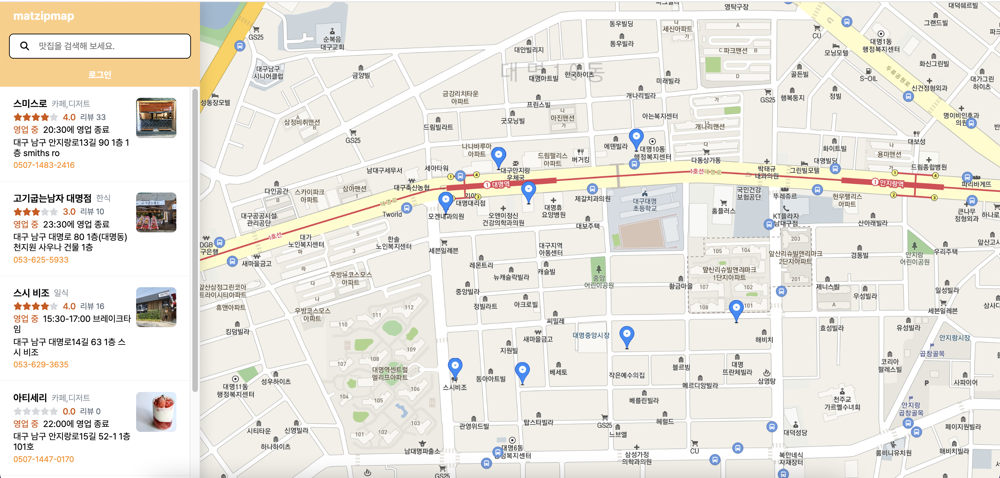
matzip map의 메인 페이지입니다.
사용자의 현재 위치를 자동으로 인식하여 현재 위치 근처의 음식점 리스트가 좌측에 표시됩니다.
지도를 움직여 현재 위치가 아닌 다른 위치의 음식점 또한 확인이 가능합니다.
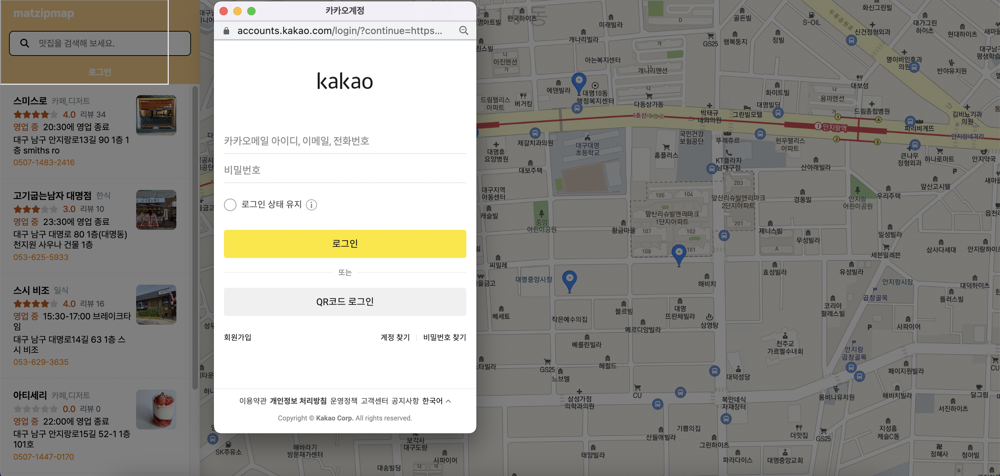
검색 창 하단 로그인을 클릭 했을 때 표시되는 소셜 로그인 페이지입니다.
로그인을 하지 않은 상태에서 음식점 상세페이지를 클릭 시 "로그인 후 리뷰를 작성할 수 있습니다." 가 표시됩니다.
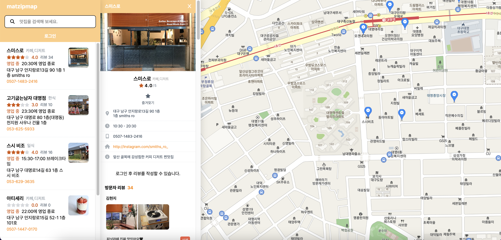
좌측 리스트 또는 지도의 아이콘을 클릭 시 해당 음식점의 위치로 이동하며, 상세 정보를 확인할 수 있습니다.
해당 칸에서 주소, 영업시간, 전화번호 등과 같은 음식점의 상세 정보와 리뷰 작성 및 확인이 가능합니다.
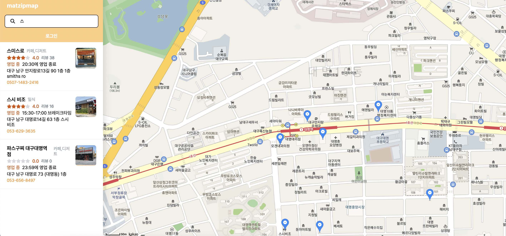
검색란에 키워드를 입력하면 해당 키워드를 포함한 음식점 리스트들이 표시됩니다.
검색 키워드는 첫 글자 뿐만 아니라 중간 글자를 입력 시에도 검색이 가능합니다.
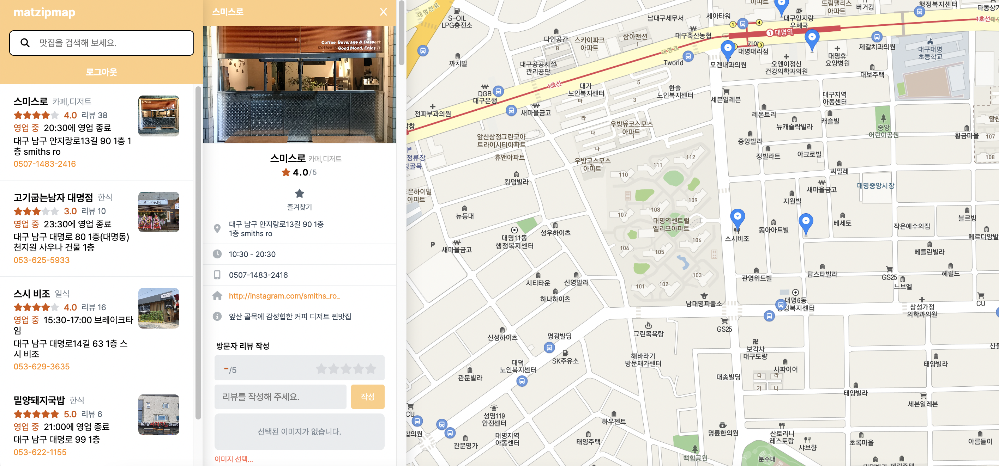
로그인 시 리뷰 작성 칸이 표시되며 작성이 가능합니다.
리뷰 작성 시 별점과 내용은 필수적이며, 이미지는 선택적입니다.
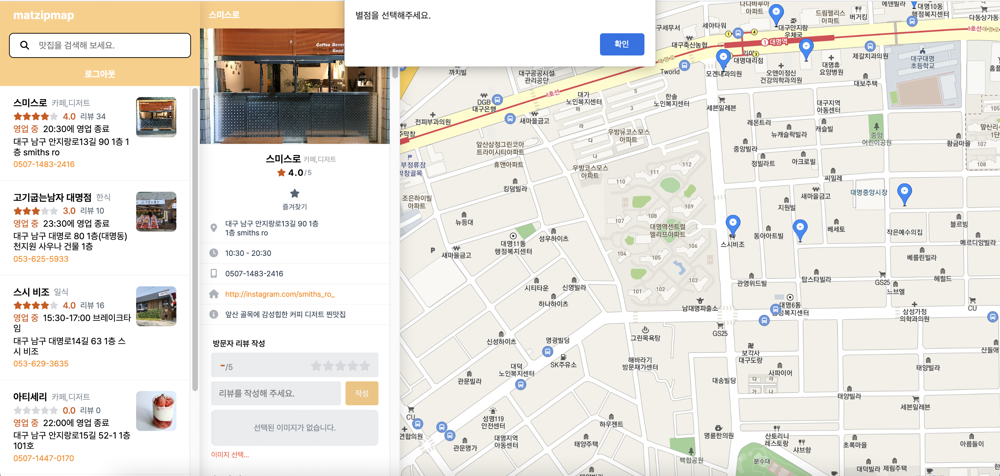
리뷰 작성 시 별점을 선택하지 않으면 경고 창이 표시되며, 리뷰 작성이 불가합니다.
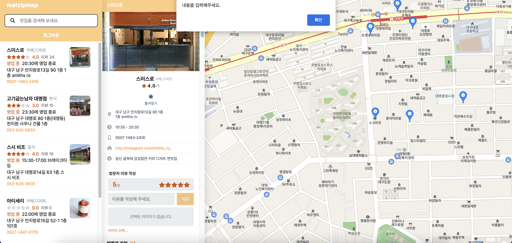
별점과 마찬가지로 내용을 입력하지 않으면 경고 창이 표시되며, 리뷰 작성이 불가합니다.
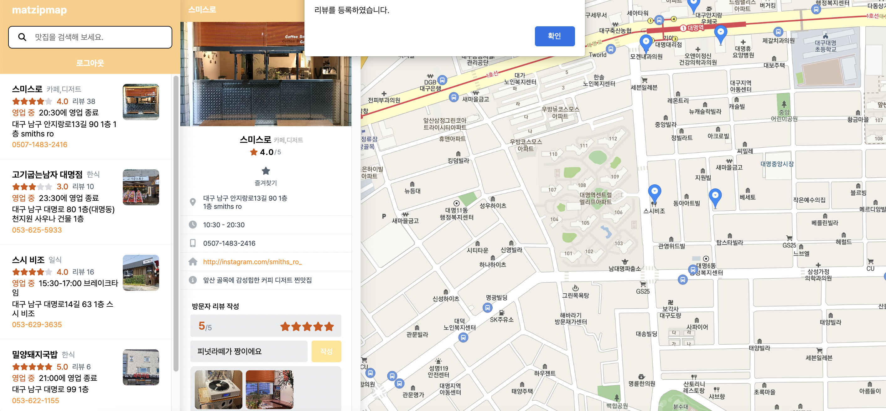
리뷰 작성에 성공했을 때의 화면입니다.
"리뷰를 등록하였습니다. " 라는 텍스트가 표시된 후 방문자 리뷰에서 확인이 가능합니다.
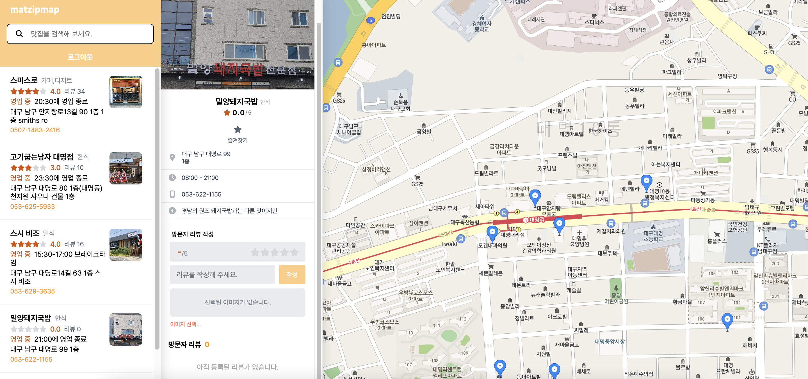
등록된 리뷰가 없을 때에는 "아직 등록된 리뷰가 없습니다. "라는 텍스트가 표시됩니다.
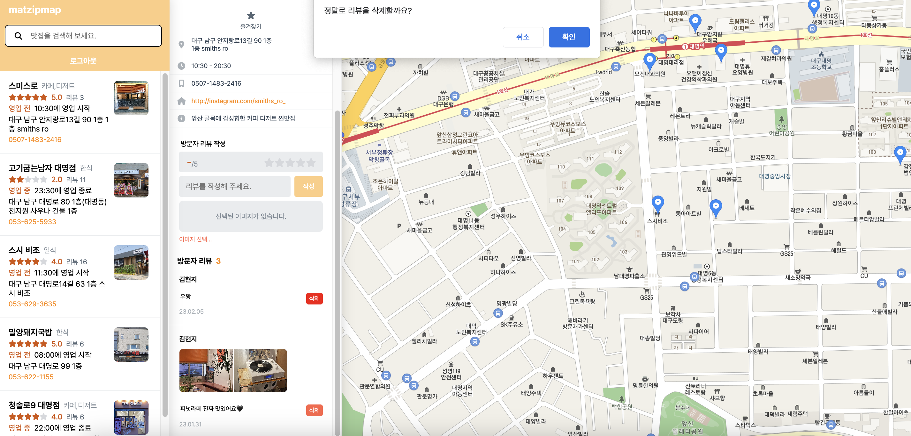
리뷰 삭제 버튼 클릭 시 "정말로 리뷰를 삭제할까요? "라는 경고 창이 표시되며 확인 클릭 시 리뷰가 삭제됩니다.
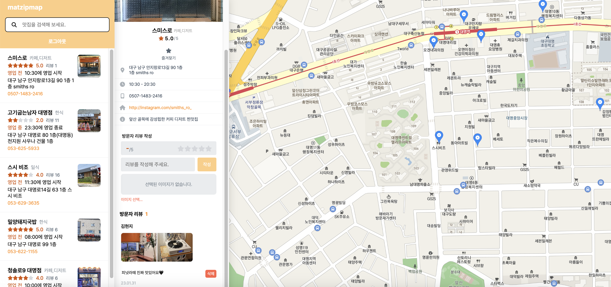
삭제된 리뷰는 복구가 불가하며, 리뷰 삭제는 해당 리뷰 작성자 외에는 리뷰 삭제가 불가합니다.
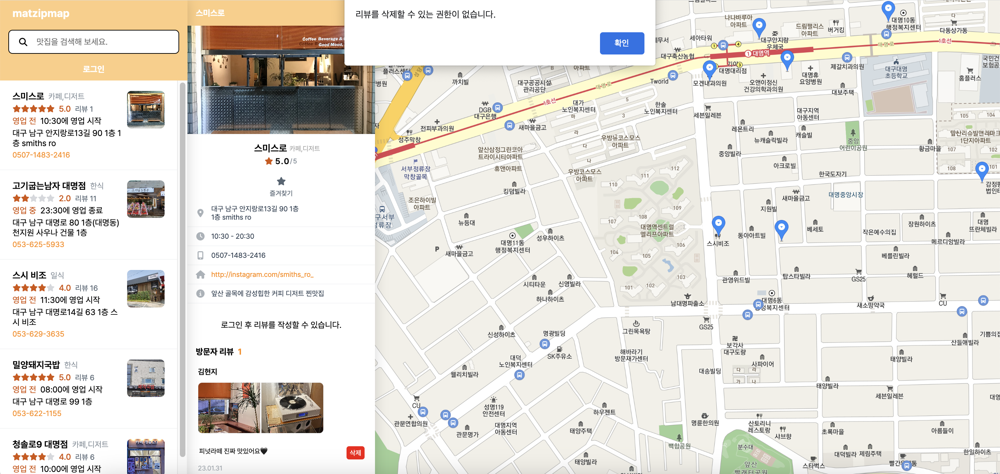
로그인을 하지 않았거나 리뷰 작성자가 아닐 때 해당 경고 창이 표시되며 리뷰 삭제가 불가합니다.
Go to Home